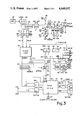

EyeTyper
The first camera-based eye-typing device: look to type, dwell to select

Overview
The EyeTyper was the first commercially produced camera-based eye-tracking communication device, designed to allow quadriplegics and people with severe motor disabilities to type using only their eyes. A video camera pointed at one eyeball detected corneal reflection and pupil position via infrared light, while the user looked at a physical display board bearing oversized illuminated characters (approximately 30, each 2×2 inches). Looking at a character for a configurable dwell time selected it, sending the keystroke to a computer, printer, or speech synthesizer.
The device was commercialized by Sentient Systems Technology in 1983 in Pittsburgh, a spinoff from Carnegie Mellon University's Robotics Institute. Mark Friedman, a research engineer at CMU, began the project in 1980 while working with disabled children at the Rehabilitation Institute of Pittsburgh, enlisting CMU student volunteers including Gary Kiliany, who became Vice President and co-founder. The core invention — a custom 'frame encoder' board — was documented in the Johns Hopkins APL Technical Digest in 1982.
The EyeTyper embodied a profound HCI paradigm: eyes as the primary physical input modality. It demonstrated that camera-based corneal-reflection eye-tracking could be made practical with 8-bit microprocessors through hardware/software co-design. The patent (US4648052A) describes a hardware frame encoder that digitized video with dual programmable thresholds, encoding only threshold-crossing events with pixel X,Y addresses into a small 1K×12-bit cache — allowing real-time analysis by an 8-bit microprocessor for the first time. The lineage from EyeTyper through DynaVox to today's Tobii Dynavox devices is the longest continuous line in eye-controlled AAC.
Deep dive
Mark Friedman, a research engineer at CMU's Robotics Institute, began the project in 1980 while working with disabled children at the Rehabilitation Institute of Pittsburgh. He enlisted CMU student volunteers including Gary Kiliany (later VP and co-founder). The initial prototype was created to help a young woman with cerebral palsy communicate. The research was funded and the core invention was documented in Friedman et al., 'The Eyetracker Communication System,' Johns Hopkins APL Technical Digest, vol. 3, no. 3, 1982.
A television camera and infrared light source were mounted behind a display board with an opening. The user sat in front of the board, and the camera observed one eye. The display board held approximately 30 oversized characters (2×2 inches each), arranged in a matrix, each containing a small indicator light. The user fixated on a character for a dwell time (adjustable from ~0.5 seconds to over a second), producing approximately 10 words per minute. The camera detected the corneal reflection (glint) and pupil center; the vector between them was mapped via a lookup table to specific character positions, with ~2–3 inches of allowable head movement. Selected characters appeared on a screen and could drive printers, speech synthesizers, or home automation.
The patent (US4648052A) describes a hardware frame encoder that digitized video with dual programmable thresholds, encoding only threshold-crossing events (rising/dropping above/below thresholds) with pixel X,Y addresses into a small 1K×12-bit cache memory — allowing analysis by an 8-bit microprocessor in real time. This was a radical departure from full-frame digitization and made real-time eye tracking affordable for the first time.
The patent was sold to the US Navy, with revenues reinvested into further development. Sentient Systems Technology rebranded as DynaVox in 1998 (acquired by Sunrise Medical), eventually acquired by Tobii in 2014 to become Tobii Dynavox. The line from EyeTyper to today's Tobii Dynavox devices is the longest continuous lineage in eye-controlled AAC. The EyeTyper directly demonstrated the key HCI principle that an assistive technology designed for the most severely disabled users could pioneer a general-purpose input modality.
Team & pioneers
- Mark B. Friedman. Research engineer, CMU Robotics Institute; founder of Sentient Systems Technology
- Gary J. Kiliany. CMU student volunteer, co-founder, VP and chief engineer at Sentient Systems
- Mark R. Dzmura. Co-inventor on patent US4648052A, engineering contributor
- Tilden Bennett. Business co-founder
Media

Sources
- UPI Archives, 'Type with your eyes' (Dec 29, 1984)
- US Patent 4,648,052 — 'Eye-tracker communication system' (filed Nov 14, 1983)
- Friedman et al., 'The Eyetracker Communication System,' Johns Hopkins APL Technical Digest, vol. 3, no. 3 (1982)
- DynaVox (Wikipedia) — historical section covering EyeTyper origins
- COGAIN Wiki — Eye Typing Systems